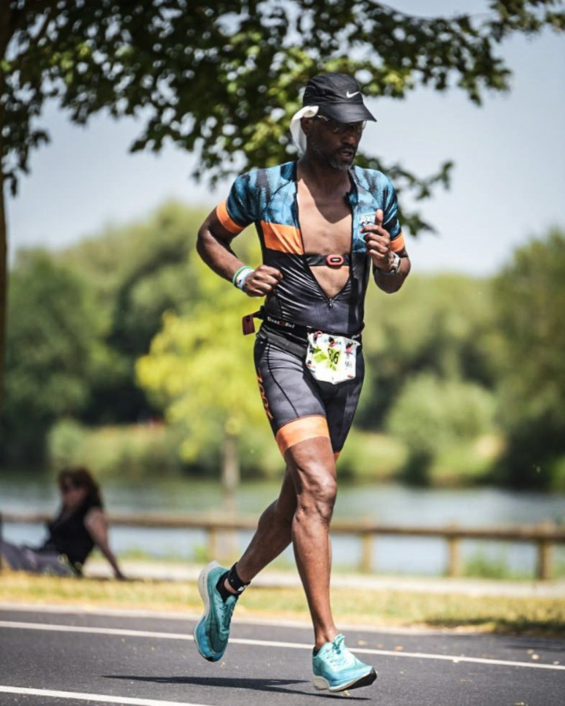

Je eerste triathlon? Ik help je er komen.
Persoonlijke coaching door een triathlon-coach in Rotterdam, voor beginners en gevorderden: zwemanalyse, trainingsschema's en begeleiding naar je 1/8, 1/4, 1/2 of hele triathlon. Door iemand die zelf vier hele triathlons finishte en het hele jaar buiten zwemt. Met jou op de plek waar je traint.
Kennismaking is gratis. Ik werk met hooguit een handvol atleten tegelijk.

Waar sta je?
Kies wat het meest op jou lijkt. Dan weet je meteen waar je moet beginnen.
Ik wil mijn eerste triathlon doen
Je kunt zwemmen, fietsen en lopen, maar alle drie achter elkaar? Ik maak er samen met jou een plan van dat past bij je leven en je agenda.
Begeleiding naar je raceIk wil sneller en slimmer trainen
Je traint al, maar op gevoel. Met een schema op maat en heldere tempo- en hartslaggrenzen haal je meer uit dezelfde uren.
Trainingsschema'sIk wil beter leren zwemmen
Zwemmen is voor de meeste triatleten het lastigste onderdeel. Met onderwaterbeelden zie je precies wat er gebeurt en wat je kunt verbeteren.
ZwemanalyseWat ik voor je kan doen
Drie diensten, los of in combinatie. Prijzen op aanvraag; we kijken samen wat past.
Zwemanalyse
Onderwateropname van je slag, analyse met ingesproken feedback die je frame voor frame terugkijkt. Je krijgt 3 tot 5 concrete verbeterpunten plus oefeningen.
Meer over zwemanalyseTrainingsschema's fietsen en lopen
Een schema op maat voor je doel en je beschikbare tijd, in heldere taal, met tempo- en hartslaggrenzen die je zo op je Garmin zet.
Meer over trainingsschema's fietsen en lopenBegeleiding naar je race
Van intake tot finish: 1/8, 1/4, 1/2 of hele triathlon. Wekelijks contact via WhatsApp, schema's voor alle drie de onderdelen, wisselzones en racedag.
Meer over begeleiding naar je raceWaarom met mij?
Sneller door slimmer te trainen
Op mijn 57e word ik nog steeds sneller, op alle drie de onderdelen. Niet door harder te trainen, maar door te kijken wat werkt: data lezen, techniek verbeteren, op tijd rusten. Vier hele triathlons, vier halve, vijftien kwart en elf marathons later weet ik wat werkt, en wat niet.
Alle valkuilen zelf meegemaakt
Te hard, te veel, te vroeg. Blessures, een zwemslag die jaren niet opschoot, een marathon die in rook opging. Ik heb het allemaal op de harde manier geleerd. Dat wil ik jou besparen: je maakt je eigen fouten, maar niet de mijne.
Klein en persoonlijk
Hooguit een handvol atleten tegelijk. Ik ken je doel, je agenda en je blessuregeschiedenis, en je hebt mij op WhatsApp.

Programmeur, ondernemer, docent, triatleet. En nu coach.
Lees mijn verhaalWat ik zelf heb gelopen, gefietst en gezwommen
Geen beloftes, gewoon de cijfers uit mijn eigen horloge.
Alles uit mijn eigen Garmin sinds 2016. Volgend jaar: Ironman Kopenhagen. Lid van TVS'90 (triathlon, Spijkenisse) en CS010 (wielrennen, Rotterdam). En dat op mijn 57e.
Zo werkt het
Van een eerste gesprek tot de finish, in vier stappen.
Kennismaking
Gratis, een half uur, bellen of koffie in Rotterdam. Jij vertelt wat je wilt, ik vertel hoe ik werk. Klikt het, dan gaan we door. Zo niet, dan heb je in elk geval een paar tips meegekregen.
Intake en data
Ik kijk naar je Strava of Garmin, je blessuregeschiedenis en je agenda. Hoeveel tijd heb je echt? Wat ging eerder goed en fout? Daar bouwen we op.
Plan en eerste 4 weken
Je krijgt een plan voor de eerste vier weken, in gewone taal, met tempo- en hartslaggrenzen die je op je horloge zet. We bespreken het samen zodat je weet waarom je doet wat je doet.
Wekelijks contact en bijsturen
Elke week kijk ik naar je trainingen en hoor ik hoe het voelde. Ging het te zwaar, was je ziek, drukke week? Dan past het schema zich aan. Zo tot aan de race, en daarna evalueren we.
Ervaringen
De eerste ervaringen van atleten verschijnen hier binnenkort. Wil je weten hoe ik werk? Vraag het me gewoon.
Neem contact opVoor wie uit Rotterdam en omgeving
Ik coach vanuit Rotterdam. Voor de kennismaking en de zwemanalyse spreken we af in de stad of bij jou in de buurt; de wekelijkse begeleiding gaat via WhatsApp en Strava of Garmin. Zo werk ik met atleten uit:
- Rotterdam
- Schiedam
- Vlaardingen
- Spijkenisse
- Capelle aan den IJssel
- Barendrecht
- Ridderkerk
- Hellevoetsluis
- Delft
- Wateringen
Woon je verder weg? Trainingsschema's en begeleiding naar je race werken ook helemaal online.
Vragen van beginners
Eerste triathlon in Rotterdam? Dit zijn de vragen die ik het vaakst krijg.
Kan ik als beginner een triathlon doen?
Ja. Als je 200 meter kunt zwemmen, een uur kunt fietsen en een half uur kunt hardlopen, ben je in 12 weken klaar voor een 1/8 triathlon. De meeste atleten die ik begeleid beginnen precies daar.
Waar in Rotterdam train je?
Je traint zelf, op je eigen plek en in je eigen tijd. De kennismaking en de zwemanalyse doen we in Rotterdam of omgeving, in een zwembad of in open water. Het wekelijkse contact gaat via WhatsApp.
Wat is een zwemanalyse?
Een onderwateropname van je zwemslag, die ik frame voor frame bekijk en inspreek. Je ziet precies wat je doet en krijgt 3 tot 5 verbeterpunten met oefeningen, terug te kijken op je telefoon.
Coach je ook buiten Rotterdam?
Ja. Trainingsschema's en begeleiding naar je race werken online, via WhatsApp en Strava of Garmin, dus ook vanuit de rest van Nederland. Alleen de zwemanalyse en de kennismaking zijn op locatie.
Wat kost triathlon-coaching?
Op aanvraag. Ik werk met een handvol atleten tegelijk, dus we kijken samen wat past bij wat je nodig hebt. De kennismaking van een half uur is gratis.
Je eerste triathlon begint met één gesprek.
Gratis kennismaking van een half uur: bellen of koffie in Rotterdam. Daarna beslis je of we doorgaan.